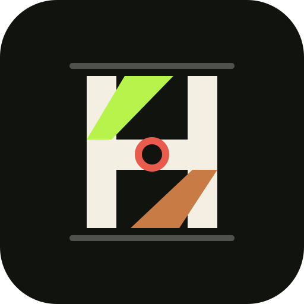
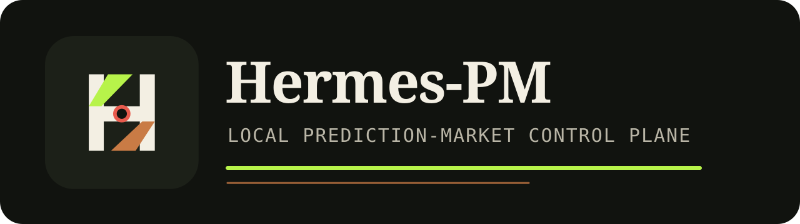

C:\Users\User\Desktop\polymarketmcprecording
PS> git status --short M README.md M SECURITY.md M src/hermes_pm/... PS> .\.venv\Scripts\python.exe -m hermes_pm.cli --no-serve campaign camp_0mqqkrknd760oin3t done verdicts={'statistically_weak': True, 'operationally_safe': True, 'compliance_eligible': False} PS> .\.venv\Scripts\hermes-pm-dashboard.exe
Manual-style local walkthroughPAPER FIRST
http://127.0.0.1:8787

Hermes-PM Dashboard
local paper campaign
LIVE LOCKED
Overview
$1,000
Bankrollpaper
Ledgerbalanced
Emergencyready
Risk Console
approve only after thesis, counter-thesis, fresh book, and policy caps.
reject stale data, ambiguous resolution, tainted evidence, wide spread.
audit links every decision to snapshots and evidence refs.
Market Watch
CLOB bookfresh
Spread0.02
Signalssanitized
Modepaper
Open the printed localhost URLDASHBOARD
https://github.com/HabrielStark/polymarketmcp

Hermes-PM
Local MCP prediction-market control plane with paper execution, deterministic risk gates, and replayable audit logs.
Why it is not an API wrapper
Market data, risk, fills, learning, dashboard, and audit run inside one local daemon while the agent supervises through MCP.
Proof, not vibes
- 547 tests collected
- 100% line and branch coverage
- pip-audit clean after pinned upgrades
- real Polymarket live-marker tests
Live boundary
Disabled by default, reference-only, compliance-gated, and process-isolated when enabled.
Repository story: clear, sober, portfolio-readyOPEN SOURCE
final checkssequential heavy tests
PS> .\.venv\Scripts\python.exe -m pytest -q 544 passed, 3 skipped, 1 warning in 76.19s PS> .\.venv\Scripts\python.exe -m coverage report TOTAL 3667 statements, 780 branches, 100% PS> pip-audit --path .venv\Lib\site-packages No known vulnerabilities found PS> $env:HPM_RUN_LIVE_TESTS='1'; pytest -m live -q 3 passed, 544 deselected
Show the commands. Show the gate.VERIFIED

ready to show
A real repo, not a staged clip.
Run the MCP server, open the dashboard, inspect the README, and keep the live-money path locked until a real operator clears every gate.